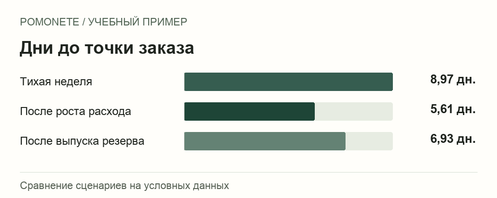

Сколько времени остаётся до следующего заказа поставщику
Аналитика запасов Яндекс Маркета по дням до точки заказа и плановому сроку поставки.
Селлер Яндекс Маркета планирует закупку силиконовых лопаток. Простое деление остатка на средние продажи говорит, что товара хватит ещё надолго. Заказ поставщику нужно разместить раньше. Высчитаем, когда запас достигнет заранее согласованной границы нового заказа.
Как выбрать точку заказа
Оцените расход на интервал от размещения до фактического прихода и отдельно добавьте резерв на вариативность. Сверяйте это число с условиями поставщика и действующим списком доступных SKU. Запишите дату обновления и диапазон дневного расхода.
Чтобы пересобрать расчёт «Дни до точки заказа» для своего магазина, перенесите в него исходные числа. В формуле A обозначает «свободный запас, шт.», B обозначает «уровень запаса для новой закупки, шт.», C обозначает «средний дневной расход, шт.». Из доступных единиц убирают удерживаемый объём и делят остаток на расход в день. При неположительном остатке проверяют доступность сразу. Запишите рядом период и охват каждого среза. Если для одной строки известна только оценка, оставьте пояснение непосредственно рядом с ней: по итоговой цифре источник уже не восстановить.
Дни до точки заказа = (A − B) ÷ C
| Условие | Свободный запас, шт. | Уровень запаса для новой закупки, шт. | Средний дневной расход, шт. | Дни до точки заказа |
|---|---|---|---|---|
| Тихая неделя | 580 | 320 | 29 | 8,97 дн. |
| После роста расхода | 580 | 350 | 41 | 5,61 дн. |
| После выпуска резерва | 634 | 350 | 41 | 6,93 дн. |

В сценарии «Тихая неделя» в формулу подставляем свободный запас, шт. = 580, уровень запаса для новой закупки, шт. = 320, средний дневной расход, шт. = 29. Получается 8,97 дн.. Уровень новой закупки уже учитывает ожидаемый срок поставки и внутреннюю подушку.
В сценарии «После роста расхода» в формулу подставляем свободный запас, шт. = 580, уровень запаса для новой закупки, шт. = 350, средний дневной расход, шт. = 41. Получается 5,61 дн.. Для новой скорости и увеличенного срока доставки точка заказа пересмотрена.
В сценарии «После выпуска резерва» в формулу подставляем свободный запас, шт. = 634, уровень запаса для новой закупки, шт. = 350, средний дневной расход, шт. = 41. Получается 6,93 дн.. Часть партии стала доступной для этого магазина после внутренней проверки.
Если «Тихая неделя» взять за исходную точку, «После роста расхода» меняет показатель «дни до точки заказа» на -3,36 дн., а «После выпуска резерва» на -2,04 дн.. Между двумя последними строками разница составляет 1,32 дн. при вычитании второй из третьей. Смотрите, какой именно вход изменился между строками. Если менялись объём и условия одновременно, итог сравнения относится ко всему сочетанию.
От меньшего результата до большего в таблице 3,36 дн.. При переходе из «После роста расхода» со значением 5,61 дн. в «После выпуска резерва» со значением 6,93 дн. условия заданы явно. Этот интервал описывает три построенных случая, а для вероятности исходов нужна история. В рабочей записке полезно назвать минимальное значение, при котором сохранится ваше решение. Если такой порог попадает внутрь интервала, подтвердите спорный параметр до того, как менять процесс.
Где появляется ложная точность
Дневная скорость может ускориться в конце недели, а поставщик отвечает только в рабочие дни. Результат в дробных днях используйте для ориентира, потом нанесите его на календарь с реальной возможностью подтвердить заказ. При резких изменениях спроса данные быстрей устаревают.
У сценария «После роста расхода» есть входы: свободный запас, шт., уровень запаса для новой закупки, шт., средний дневной расход, шт.. Для каждого впишите, где взять факт и с каким временным лагом он поступит. Опорой будут история продаж, журнал остатков и даты фактических приходов. Если один источник обновляется быстрее другого, зафиксируйте общий момент доступности. При существенном разрыве покажите последние данные отдельным оперативным значением.
В историю поставок запишите обещанную и фактическую дату, момент доступности товара и интервал, в котором возник недозаказ. Разовые всплески спроса и дни без товара полезно отмечать отдельно. Когда данных мало, прогноз на ближайший горизонт лучше держать несколькими уровнями и привязывать каждый к своему действию. При высокой неопределённости небольшая партия с возможностью докупки даёт другую экономику, чем дешёвая крупная партия с долгим ожиданием.
Что сильнее всего меняет результат
От результата 5,61 дн. в строке «После роста расхода» пересчитайте несколько вариантов. Проверьте «свободный запас, шт.», «уровень запаса для новой закупки, шт.», «средний дневной расход, шт.». Прибавка около десятой доли на вход показывает реакцию за один шаг. Целые числа сохраняем целыми. Для долей, где прирост выводит числитель за предел базы, пробуем уменьшение. Все остальные параметры при каждой подстановке сохраняются.
- «Свободный запас, шт.» меняется с 580 на 638. При прежних остальных входах получается 7,02 дн., сдвиг составляет 1,41 дн..
- «Уровень запаса для новой закупки, шт.» меняется с 350 на 385. При прежних остальных входах получается 4,76 дн., сдвиг составляет -0,85 дн..
- «Средний дневной расход, шт.» меняется с 41 на 45. При прежних остальных входах получается 5,11 дн., сдвиг составляет -0,5 дн..
Больше всего изменила итог подстановка «свободный запас, шт.». Отклонение составило 1,41 дн.. До сбора новых данных оцените, насколько правдоподобен такой шаг. Например, расход может подтверждаться документом, а объём пока наблюдается лишь частично. Уточняйте прежде всего те входы, где одновременно возможен заметный сдвиг и мало подтверждений.
Полезно посмотреть скорость расхода каждого размера лопатки. Общая норма может скрыть, что один вариант дойдёт до порога раньше остальных. Тогда дата повторного заказа определяется ограничивающим SKU и возможностью изменить ассортимент внутри партии.
Как связать число с календарём
Сравните вычисленную дату с возможной следующей связью с поставщиком. Если точка выпадает перед длинным выходным, заведите контрольный звонок раньше. Проверьте, может ли часть партии прийти отдельным подтверждённым прибытием.
На очередном пересмотре отметьте, какие сроки реализовались и какой был спрос в дни с доступным запасом. Оценку качества считают на событии, которое наступило после составления прогноза. Так проще отделить неточность метода от изменившейся доступности поставщика. Храните старые допущения: когда рынок меняется, восстановить причину размера закупки можно по сохранённым датам и объёмам.
Для управленческой встречи подготовьте два небольших примера из рабочих записей. Первый сверяет «дни до точки заказа» при базовых условиях «Тихая неделя». Второй берёт изменившуюся строку и объясняет, какой источник исправлен. Селлеру Яндекс Маркета будет проще повторить расчёт на новой группе, если видны исходные значения, дата анализа и момент, когда итог станет достаточно точным для решения.